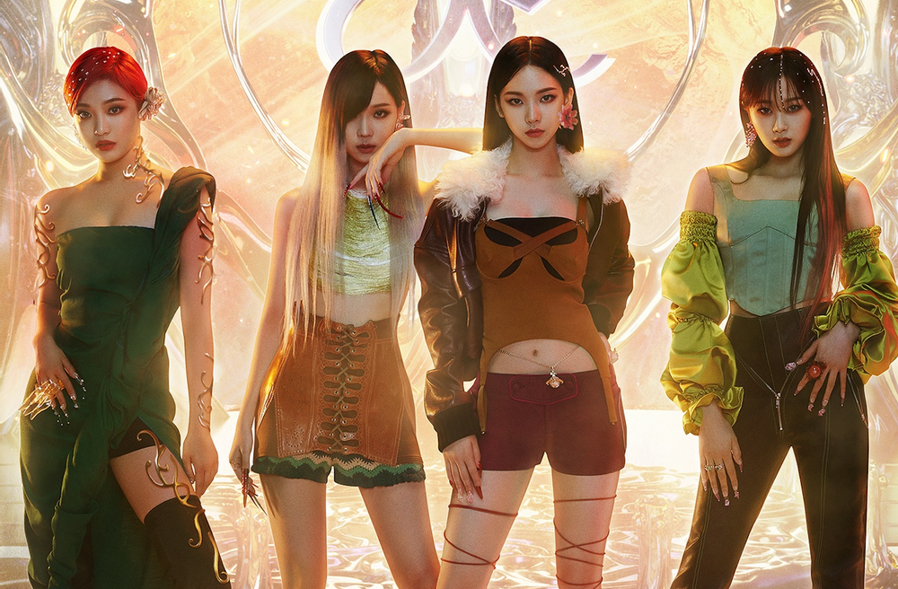

에스파(aespa)는 aespa는 2020년 11월 17일에 데뷔한 SM엔터테인먼트 소속 4인조 다국적 걸그룹이다.카리나, 지젤, 윈터, 닝닝 네명의 멤버로 이루어져있다.
‘자신의 또 다른 자아인 아바타를 만나 새로운 세계를 경험하게 된다’는 세계관을 바탕으로 활동한다.
aespa는 현실 세계에 존재하는 aespa 멤버들과 가상 세계에 존재하는 아바타 ‘ae’가 SYNK를 통해 소통하고 교감하는 이야기를 가지고 있다.
ae는 인간의 데이터를 기반으로 만들어진 가상 세계 속 또 다른 자아로, 자신의 방식대로 생각하고 살아가는 존재이다.
그들은 ‘KWANGYA(광야)’ 속 FLAT(플랫)에 살고 있다. 이곳 KWANGYA(광야)에서는 베스트프렌드를 'MY(마이)'라고 부른다.
NAVIS(나비스)는 aespa와 가상 세계 속 아바타를 서포트해 주는 든든한 조력자이자 안내자 역할을 하는 가상 세계 속 신비로운 존재이다.
에스파 실제 멤버와 아바타가 연결된 상태를 SYNK(싱크)라고 하며 SYNK 상태가 지속되면 REKALL(리콜)이 일어나 아바타들이 현실 세계로 오게 된다.
